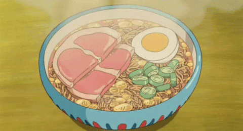

Spicy Asian Ramen Noodles

Description
I admit it, I still love ramen. In this yummy recipe, expect fast, easy, and spicy with salty, sweet,
and sour flavors kicking in.
The spiciness level can be adapted to your taste by adjusting the chili garlic sauce.
This will make 4 side servings or 3 hearty main course servings.
Ingredients
Sauce
- 3 tablespoons reduced-sodium soy sauce
- 2 tablespoons sesame oil
- 1½ tablespoons brown sugar
- 1 tablespoon rice vinegar
- 2 teaspoons chili-garlic sauce, or more to taste
- 1 teaspoon grated fresh ginger
- 3 tablespoons creamy peanut butter
Noodles
- 2 (3 ounce) packages ramen noodles
- 2 tablespoons chopped peanuts
- 2 medium green onions, thinly sliced diagonally
Steps
- Whisk soy sauce, sesame oil, brown sugar, rice vinegar, chili garlic sauce, and ginger together in a small bowl.
Add peanut butter, whisking until well combined, and set aside.
- Bring 4 cups of water to a boil in a pot. Discard the flavor packet and add ramen noodles to the boiling water.
Cook until noodles are tender, 4 to 5 minutes.
Drain noodles, reserving some of the noodle water in case you need to thin out the sauce later.
- Pour sauce over ramen noodles, tossing until well coated.
If sauce is too thick, thin out with a small amount of the reserved noodle water until you reach your desired consistency.
Your hot noodles will soak up the sauce. Garnish with peanuts and green onion, and serve.
Back